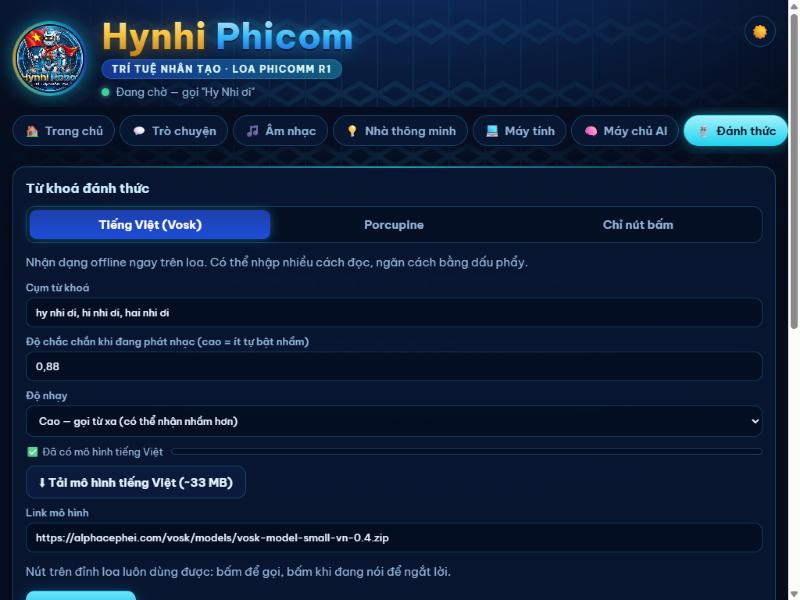
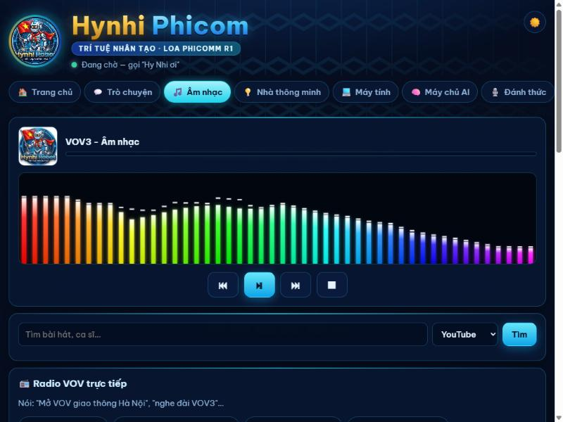
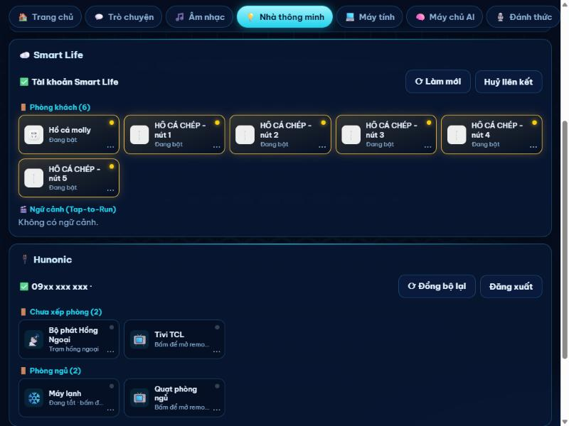
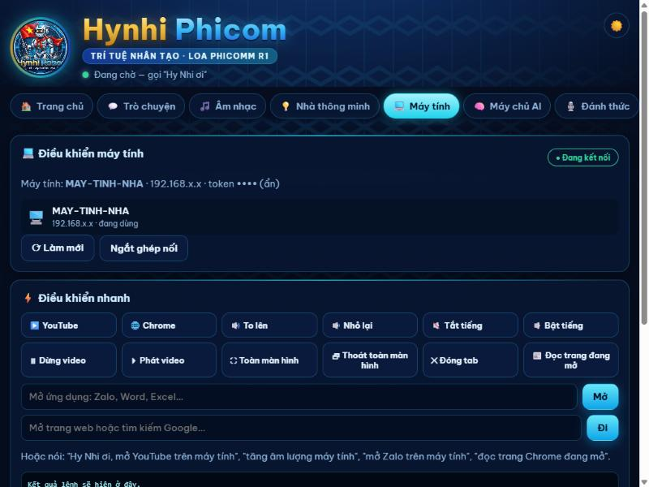

Hướng dẫn cài đặt và sử dụng
Cần một máy tính Windows 10/11 có Internet và loa Phicomm R1 đã cắm điện. Toàn bộ cài đặt làm qua Wi‑Fi, không cần tháo loa hay cắm cáp.
Tải bộ cài Windows (13 MB) ← Về trang Loa Phicom
- 1. Cài đặt
- 2. Trang điều khiển
- 3. Trợ lý AI
- 4. Đánh thức
- 5. Nhạc và radio
- 6. Nhà thông minh
- 7. Máy tính
- Câu lệnh mẫu
1Cài ứng dụng vào loa
- Tải
HynhiPhicom-Setup.zipvà giải nén toàn bộ ra một thư mục. - Nối máy tính với loa:
- Loa mới hoặc chưa vào mạng nhà: loa phát Wi‑Fi
Phicomm_R1_xxxx. Nếu không thấy, giữ nút trên đỉnh loa khoảng 5 giây. Nối máy tính vào Wi‑Fi đó. - Loa đã vào Wi‑Fi nhà: để máy tính dùng chung mạng với loa.
- Loa mới hoặc chưa vào mạng nhà: loa phát Wi‑Fi
- Bấm đúp
CaiDat-HynhiPhicom.bat. Trong cửa sổ cài đặt:- Chọn Qua Wi‑Fi của loa hoặc Qua mạng nhà (nhập IP loa).
- Nhập tên và mật khẩu Wi‑Fi nhà, giữ tích Kết nối loa vào Wi‑Fi này sau khi cài xong.
- Muốn ra lệnh cho máy tính bằng giọng nói, tích Cài điều khiển máy tính này.
- Bấm CÀI ĐẶT và chờ khoảng 1–2 phút.
- Nối máy tính về lại Wi‑Fi nhà. Loa khởi động và đọc to địa chỉ trang điều khiển, ví dụ
http://192.168.1.19:8088.
Quên địa chỉ? Gọi “Hy Nhi ơi, địa chỉ trang điều khiển là gì?” hoặc xem danh sách thiết bị trên router. Nên đặt IP cố định cho loa trên router để địa chỉ không đổi.
2Mở trang điều khiển
Mở địa chỉ loa đọc bằng trình duyệt trên điện thoại hoặc máy tính cùng mạng. Trang chủ hiện trạng thái máy chủ AI, từ khoá, Wi‑Fi, nút Gọi Hy Nhi, âm lượng và phổ nhạc của bài đang phát.

3Kích hoạt trợ lý AI
- Mở tab Máy chủ AI, chọn xiaozhi.me. Loa đọc và hiển thị mã kích hoạt 6 số.
- Đăng nhập xiaozhi.me, thêm thiết bị và nhập mã đó.
- Trong cấu hình tác tử, chọn ngôn ngữ tiếng Việt và giọng đọc tiếng Việt.
Có máy chủ riêng (xiaozhi-server)? Chọn Máy chủ tuỳ nhập và nhập địa chỉ OTA, WebSocket. Hynhi luôn yêu cầu trả lời bằng tiếng Việt và tự chặn câu trả lời tiếng Trung.
4Từ khoá đánh thức
- Lần đầu, vào tab Đánh thức và bấm Tải mô hình tiếng Việt (~33 MB). Loa tải một lần, sau đó nhận từ khoá không cần Internet.
- Gọi “Hy Nhi ơi” hoặc “Hi Nhi ơi”, nghe tiếng “tinh” rồi nói yêu cầu.
- Sau khi trả lời, loa nghe tiếp 30 giây. Cứ nói tiếp, không cần gọi lại.

Gọi từ xa không ăn? Chọn độ nhạy Cao và tăng khuếch đại micro. Bật nhạc to thì đứng gần hơn hoặc bấm nút trên đỉnh loa.
5Nhạc, YouTube, radio và podcast
- Bằng giọng nói: “Hy Nhi ơi, mở bài Nối vòng tay lớn”. Loa tìm và phát ngay.
- Trên trang: tab Âm nhạc, gõ tên bài, chọn nguồn YouTube hoặc ZingMP3. Video YouTube phát ngay trong khung phổ nhạc: hình trên điện thoại/máy tính, tiếng ra loa và khớp hình. Nút 🔊 Tiếng: Loa / 🎧 Tiếng: Máy này để chọn nơi phát tiếng.
- Equalizer: chọn chế độ có sẵn (Bass mạnh, Pop, Giọng nói…) hoặc chỉnh từng dải và độ tăng bass.
Tiếng gốc của video cần máy chủ nhạc Hynhi chạy trên một máy tính trong nhà (cổng 5005, cho phép qua tường lửa). Khi máy tính tắt, loa tự phát bản tương ứng trên ZingMP3.

Phần Radio VOV trực tiếp trong tab Âm nhạc có các kênh VOV phát trực tiếp và podcast tiếng Việt. Nói “mở VOV Giao thông” hoặc “nghe podcast”.

6Nhà thông minh: Smart Life và Hunonic
Smart Life (Tuya):
- Trong app Smart Life: Tôi → Cài đặt → Tài khoản và bảo mật, sao chép User Code.
- Trên trang loa, tab Nhà thông minh → Smart Life, dán User Code, bấm Tạo mã QR.
- Trong app Smart Life bấm + → Quét, quét mã và Xác nhận. Thiết bị và từng nút công tắc tự đồng bộ tên.
Hunonic: nhập số điện thoại và mật khẩu tài khoản Hunonic để tải công tắc, ổ cắm và điều khiển hồng ngoại.


Nói: “bật đèn phòng khách”, “tắt máy bơm”, “máy lạnh 26 độ”.
7Điều khiển máy tính
- Tích Cài điều khiển máy tính này khi cài loa, hoặc chạy
desktop-bridge\CaiDat-DesktopBridge.battrong bộ cài. - Máy tính cùng mạng tự ghép với loa, không cần nhập mã.
- Tab Máy tính có nút nhanh: YouTube, Chrome, âm lượng, toàn màn hình, đóng tab, mở ứng dụng, tìm Google.

Lần đầu Windows có thể hỏi quyền tường lửa cho Desktop Bridge. Chọn Cho phép với mạng riêng (Private).
Câu lệnh mẫu
- Âm nhạc“Mở bài Sóng gió”
- Radio“Mở VOV3”
- Âm lượng“To lên”, “Âm lượng 50”
- Dừng“Dừng nhạc”, “Bài tiếp theo”
- Nhà“Bật đèn phòng ngủ”
- Máy lạnh“Máy lạnh 25 độ”
- Máy tính“Mở YouTube trên máy tính”
- Báo thức“Đặt báo thức 6 giờ sáng”
- Thời tiết“Hôm nay trời thế nào?”
- Địa chỉ“Địa chỉ trang điều khiển là gì?”
Câu hỏi thường gặp
Bộ cài không tìm thấy loa
Kiểm tra máy tính đang nối Wi‑Fi của loa (Phicomm_R1_xxxx) hoặc cùng mạng với loa. Rút điện loa, cắm lại, chờ 1 phút rồi chạy lại bộ cài.
Loa không trả lời sau khi gọi
Mở tab Máy chủ AI xem trạng thái. Nếu còn hiện mã kích hoạt, nhập mã trên xiaozhi.me. Nếu báo mất kết nối, kiểm tra Internet của Wi‑Fi nhà.
Đổi Wi‑Fi cho loa
Vào tab Hệ thống → Wi‑Fi nhà, bấm Quét hoặc gõ tên mạng mới (chỉ Wi‑Fi 2.4 GHz) và nhập mật khẩu. Nếu loa mất mạng, giữ nút trên đỉnh 5 giây để loa phát lại Wi‑Fi cài đặt.
Cập nhật phiên bản mới
Tải bộ cài mới nhất ở trang này, chọn Qua mạng nhà, nhập IP loa và bấm CÀI ĐẶT. Cấu hình trên loa được giữ nguyên.